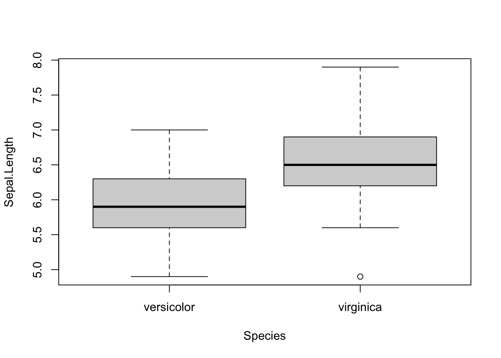
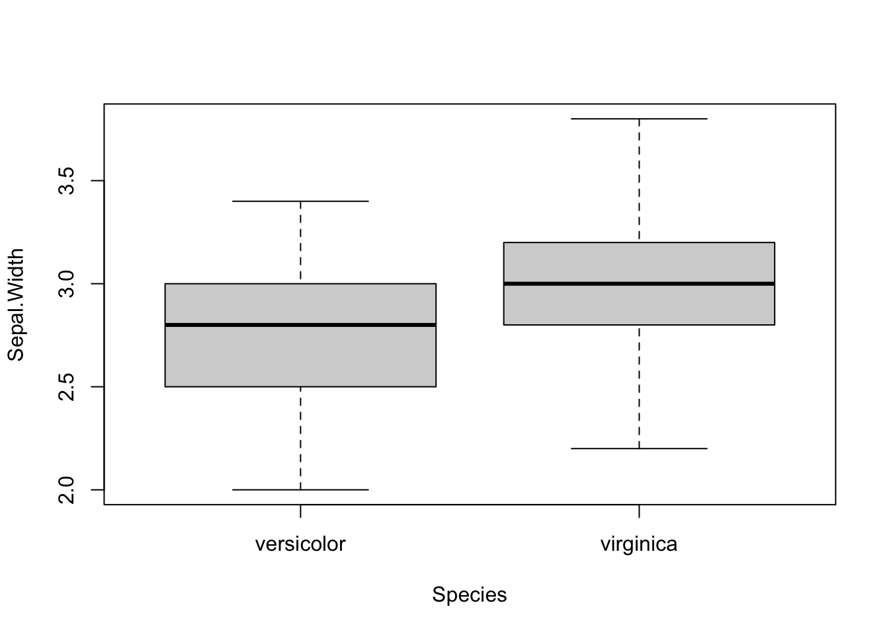
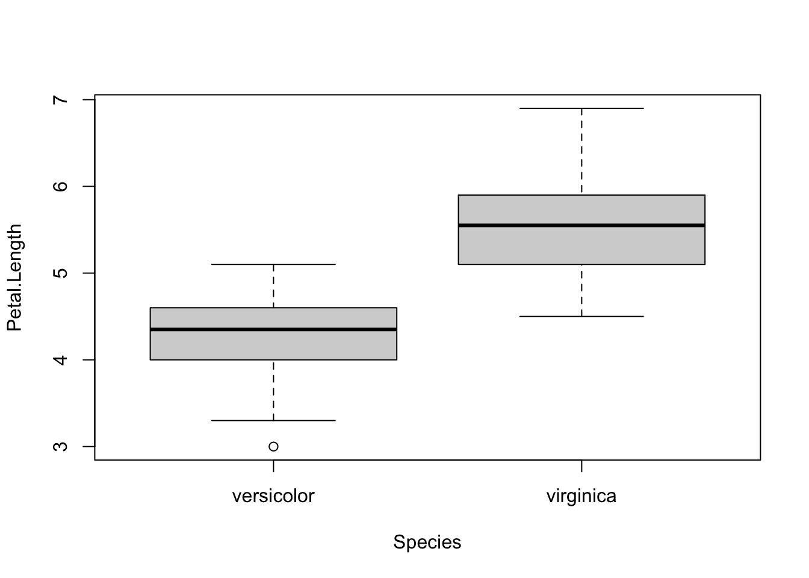
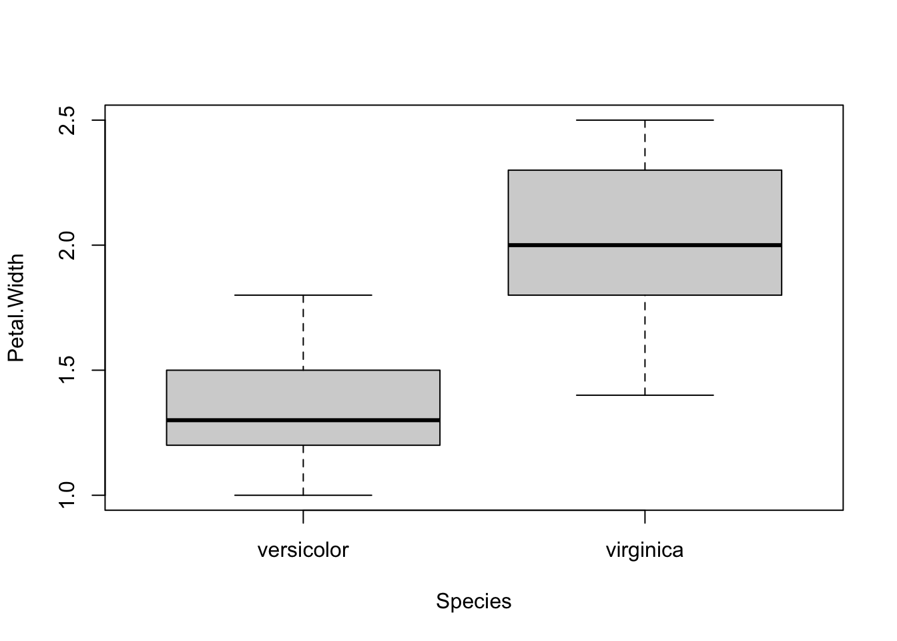
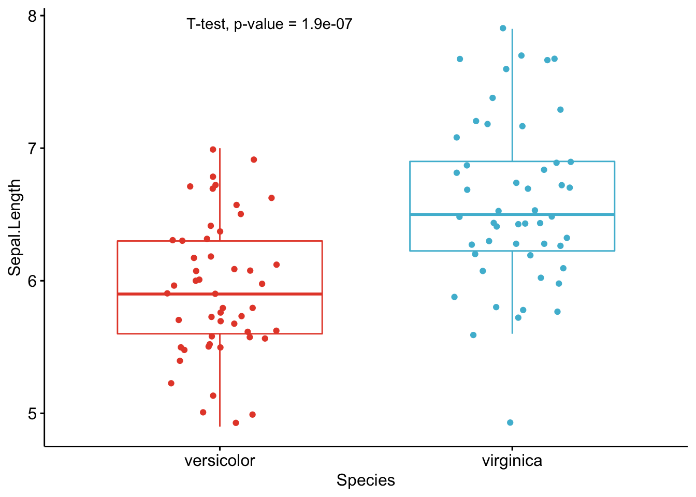
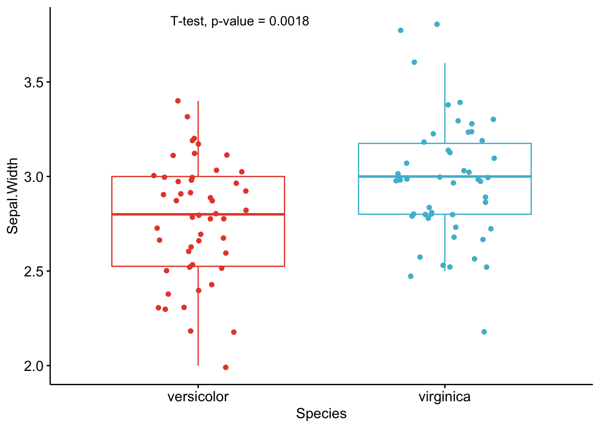
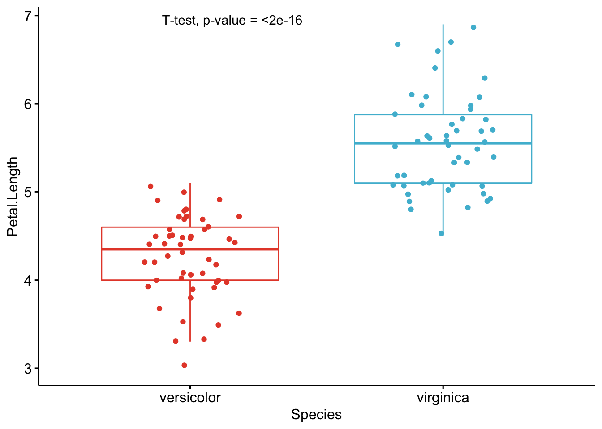
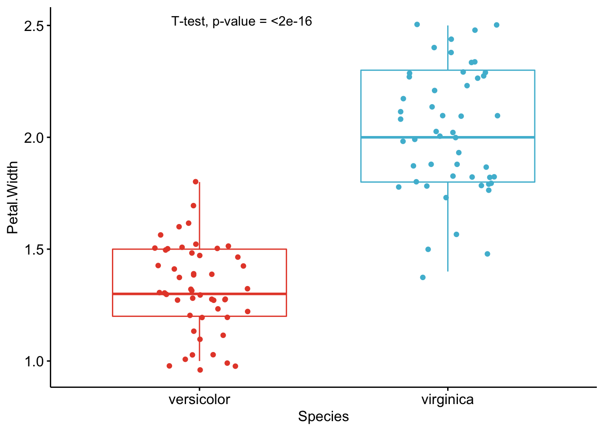

Setting
As part of my teaching assistant position in a Belgian university, students often ask me for some help in their statistical analyses for their master’s thesis.
A frequent question is how to compare groups of patients in terms of several quantitative continuous variables. Most of us know that:
- To compare two groups, a Student’s t-test should be used1
- To compare three groups or more, an ANOVA should be performed
These two tests are quite basic and have been extensively documented online and in statistical textbooks so the difficulty is not in how to perform these tests.
In the past, I used to do the analyses by following these 3 steps:
- Draw boxplots illustrating the distributions by group (with the
boxplot()function or thanks to the{esquisse}R Studio addin if I wanted to use the{ggplot2}package) - Perform a t-test or an ANOVA depending on the number of groups to compare (with the
t.test()andoneway.test()functions for t-test and ANOVA, respectively) - Repeat steps 1 and 2 for each variable
This was feasible as long as there were only a couple of variables to test. Nonetheless, most students came to me asking to perform these kind of tests not on one or two variables, but on multiples variables. So when there were more than one variable to test, I quickly realized that I was wasting my time and that there must be a more efficient way to do the job.
Note: you must be very careful with the issue of multiple testing (also referred as multiplicity) which can arise when you perform multiple t-tests. In short, when a large number of statistical tests are performed, some will have p-values less than 0.05 purely by chance, even if all null hypotheses are in fact really true. This is known as multiplicity or multiple testing. You can tackle this problem by using the Bonferroni correction, among others. The Bonferroni correction is a simple method that allows many t-tests to be made while still assuring an overall confidence level is maintained. For this, instead of using the standard threshold of \(\alpha = 5\)% for the significance level, you can use \(\alpha = \frac{0.05}{m}\) where \(m\) is the number of t-tests. For example, if you perform 20 t-tests with a desired \(\alpha = 0.05\), the Bonferroni correction implies that you would reject the null hypothesis for each individual test when the p-value is smaller than \(\alpha = \frac{0.05}{20} = 0.0025\).
Note also that there is no universally accepted approach for dealing with the problem of multiple comparisons. Usually, you should choose a p-value adjustment measure familiar to your audience or in your field of study. The Bonferroni correction is the most common way to take this into account and is easy to implement. It is however not appropriate if you have a very large number of tests to perform (imagine you want to do 10,000 t-tests, a p-value would have to be less than \(\frac{0.05}{10000} = 0.000005\) to be significant). A more powerful method is also to adjust the false discovery rate using the Benjamini-Hochberg procedure (McDonald, 2014). This article aims at presenting a way to perform multiple t-tests and ANOVA from a technical point of view (how to implement it in R). Discussion on which adjustment method to use or whether there is a more appropriate model to fit the data is beyond the scope of this article (so be sure to understand the implications of using the code below for your own analyses). Make sure also to test the assumptions of the ANOVA before interpreting results.
Perform multiple tests at once
I thus wrote a piece of code that automated the process, by drawing boxplots and performing the tests on several variables at once. Below is the code I used, illustrating the process with the iris dataset. The Species variable has 3 levels, so let’s remove one, and then draw a boxplot and apply a t-test on all 4 continuous variables at once. Note that the continuous variables that we would like to test are variables 1 to 4 in the iris dataset.
dat <- iris
# remove one level to have only two groups
dat <- subset(dat, Species != "setosa")
dat$Species <- factor(dat$Species)
# boxplots and t-tests for the 4 variables at once
for (i in 1:4) { # variables to compare are variables 1 to 4
boxplot(dat[, i] ~ dat$Species, # draw boxplots by group
ylab = names(dat[i]), # rename y-axis with variable's name
xlab = "Species"
)
print(t.test(dat[, i] ~ dat$Species)) # print results of t-test
}
##
## Welch Two Sample t-test
##
## data: dat[, i] by dat$Species
## t = -5.6292, df = 94.025, p-value = 1.866e-07
## alternative hypothesis: true difference in means is not equal to 0
## 95 percent confidence interval:
## -0.8819731 -0.4220269
## sample estimates:
## mean in group versicolor mean in group virginica
## 5.936 6.588
##
## Welch Two Sample t-test
##
## data: dat[, i] by dat$Species
## t = -3.2058, df = 97.927, p-value = 0.001819
## alternative hypothesis: true difference in means is not equal to 0
## 95 percent confidence interval:
## -0.33028364 -0.07771636
## sample estimates:
## mean in group versicolor mean in group virginica
## 2.770 2.974
##
## Welch Two Sample t-test
##
## data: dat[, i] by dat$Species
## t = -12.604, df = 95.57, p-value < 2.2e-16
## alternative hypothesis: true difference in means is not equal to 0
## 95 percent confidence interval:
## -1.49549 -1.08851
## sample estimates:
## mean in group versicolor mean in group virginica
## 4.260 5.552
##
## Welch Two Sample t-test
##
## data: dat[, i] by dat$Species
## t = -14.625, df = 89.043, p-value < 2.2e-16
## alternative hypothesis: true difference in means is not equal to 0
## 95 percent confidence interval:
## -0.7951002 -0.6048998
## sample estimates:
## mean in group versicolor mean in group virginica
## 1.326 2.026As you can see, the above piece of code draws a boxplot and then prints results of the test for each continuous variable, all at once.
At some point in the past, I even wrote code to:
- draw a boxplot
- test for the equality of variances (thanks to the Levene’s test)
- depending on whether the variances were equal or unequal, the appropriate test was applied: the Welch test if the variances were unequal and the Student’s t-test in the case the variances were equal (see more details about the different versions of the t-test for two samples)
- apply steps 1 to 3 for all continuous variables at once
I had a similar code for ANOVA in case I needed to compare more than two groups.
The code was doing the job relatively well. Indeed, thanks to this code I was able to test several variables in an automated way in the sense that it compared groups for all variables at once.
The only thing I had to change from one project to another is that I needed to modify the name of the grouping variable and the numbering of the continuous variables to test (Species and 1:4 in the above code).
Concise and easily interpretable results
T-test
Although it was working quite well and applicable to different projects with only minor changes, I was still unsatisfied with another point.
Someone who is proficient in statistics and R can read and interpret the output of a t-test without any difficulty. However, as you may have noticed with your own statistical projects, most people do not know what to look for in the results and are sometimes a bit confused when they see so many graphs, code, output, results and numeric values in a document. They are quite easily overwhelmed by this mass of information.
With my old R routine, the time I was saving by automating the process of t-tests and ANOVA was (partially) lost when I had to explain R outputs to my students so that they could interpret the results correctly. Although most of the time it simply boiled down to pointing out what to look for in the outputs (i.e., p-values), I was still losing quite a lot of time because these outputs were, in my opinion, too detailed for most real-life applications. In other words, too much information seemed to be confusing for many people so I was still not convinced that it was the most optimal way to share statistical results to nonscientists.
Of course, they came to me for statistical advices, so they expected to have these results and I needed to give them answers to their questions and hypotheses. Nonetheless, I wanted to find a better way to communicate these results to this type of audience, with the minimum of information required to arrive at a conclusion. No more and no less than that.
After a long time spent online trying to figure out a way to present results in a more concise and readable way, I discovered the {ggpubr} package. This package allows to indicate the test used and the p-value of the test directly on a ggplot2-based graph. It also facilitates the creation of publication-ready plots for non-advanced statistical audiences.
After many refinements and modifications of the initial code (available in this article), I finally came up with a rather stable and robust process to perform t-tests and ANOVA for more than one variable at once, and more importantly, make the results concise and easily readable by anyone (statisticians or not).
A graph is worth a thousand words, so here are the exact same tests than in the previous section, but this time with my new R routine:
library(ggpubr)
# Edit from here #
x <- which(names(dat) == "Species") # name of grouping variable
y <- which(names(dat) == "Sepal.Length" # names of variables to test
| names(dat) == "Sepal.Width"
| names(dat) == "Petal.Length"
| names(dat) == "Petal.Width")
method <- "t.test" # one of "wilcox.test" or "t.test"
paired <- FALSE # if paired make sure that in the dataframe you have first all individuals at T1, then all individuals again at T2
# Edit until here
# Edit at your own risk
for (i in y) {
for (j in x) {
ifelse(paired == TRUE,
p <- ggpaired(dat,
x = colnames(dat[j]), y = colnames(dat[i]),
color = colnames(dat[j]), line.color = "gray", line.size = 0.4,
palette = "npg",
legend = "none",
xlab = colnames(dat[j]),
ylab = colnames(dat[i]),
add = "jitter"
),
p <- ggboxplot(dat,
x = colnames(dat[j]), y = colnames(dat[i]),
color = colnames(dat[j]),
palette = "npg",
legend = "none",
add = "jitter"
)
)
# Add p-value
print(p + stat_compare_means(aes(label = paste0(..method.., ", p-value = ", ..p.format..)),
method = method,
paired = paired,
# group.by = NULL,
ref.group = NULL
))
}
}
As you can see from the graphs above, only the most important information is presented for each variable:
- a visual comparison of the groups thanks to boxplots
- the name of the statistical test
- the p-value of the test
Of course, experts may be interested in more advanced results. However, this simple yet complete graph, which includes the name of the test and the p-value, gives all the necessary information to answer the question: “Are the groups different?”.
In my experience, I have noticed that students and professionals (especially those from a less scientific background) understand way better these results than the ones presented in the previous section.
The only lines of code that need to be modified for your own project is the name of the grouping variable (Species in the above code), the names of the variables you want to test (Sepal.Length, Sepal.Width, etc.),2 whether you want to apply a t-test (t.test) or Wilcoxon test (wilcox.test) and whether the samples are paired or not (FALSE if samples are independent, TRUE if they are paired).
Based on these graphs, it is easy, even for non-experts, to interpret the results and conclude that the versicolor and virginica species are significantly different in terms of all 4 variables (since all p-values \(< \frac{0.05}{4} = 0.0125\) (remind that the Bonferroni correction is applied to avoid the issue of multiple testing, so we divide the usual \(\alpha\) level by 4 because there are 4 t-tests)).
References
McDonald, J.H. 2014. Handbook of Biological Statistics (3rd ed.). Sparky House Publishing, Baltimore, Maryland.
In theory, an ANOVA can also be used to compare two groups as it will give the same results compared to a Student’s t-test, but in practice we use the Student’s t-test to compare two samples and the ANOVA to compare three samples or more.↩︎
Do not forget to separate the variables you want to test with
|.↩︎